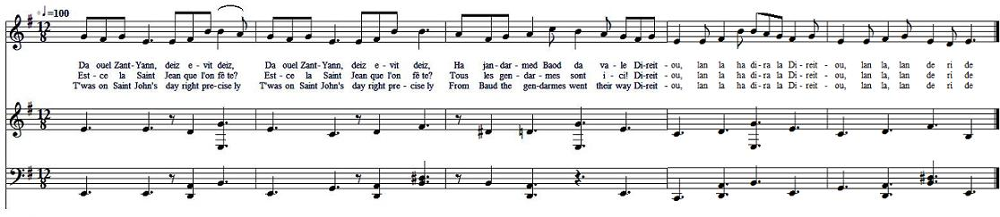
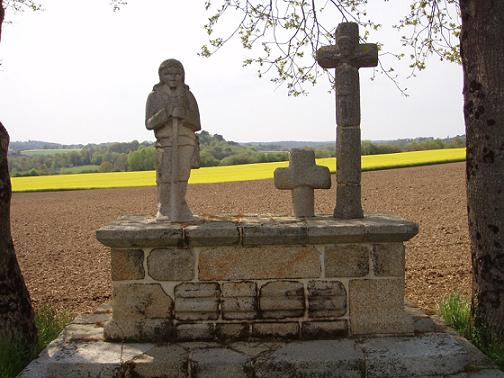

|
BREZHONEG (Stumm KLT) MARV JEAN JAN [1] 1. Da ouel Zant-Yann, deiz evit deiz, (div wech) Nag a jandarmed da vale ! Direitou, lan la ha dira la Direitou, lan la, lan de ri de. 2. Jandarmed Baod 'ma da vale Ha re Bondi ha re Bloue. 3. Ha re Bondi ha re Bloue, Da Velrand o tont adarre 4. Da Velrand o tont adarre, E di Saoz-Bras a Gerle [2] 5. Barzh e Kerle pa erruent "Boñjour ha demat" a larent. 6. "Boñjour d'eoc'h, tudoù er ger-mañ! Men ma ho Chouaned dre-mañ? 7. Gwragez Kerle ha re Dalhoet, Men ema aet ho Chouaned? 8. Men ema dre-mañ ar Chouan Glaod Talhoet, peotramant Jean Jan?" 9. "Tri miz hanter a zo paseet, N'eus ket gwelet Chouan ebed." 10. "Gwragez Kerle, gaou a larit: Jean Jan zo ganeoc'h ha Glaod Talhouet." - 11. Fañchon Ar Saoz, ha pa glevas An hent d'an-diaz a zevalas. 12. Loj ar Chouanted p'erruas [3] D'ec'h ami Jean hi a laras: 13. "M'ami Jean Jan, 'n em saveteit! Erru eo ar Sañkuloted! 14. Emaon o paouez komz ganto: Emaint er penn-c'her e Kerle." 15. "Fañchon Ar Saoz, kerzhit endro! P'am-bo hoar, m'ho rekompañso." 16. Diouzhtu oa bet rekompañset: Gant pemp pe c'hwec'h a jañdarmed 17. N'he-doa ket graet tregont pas, P'he-doa resevet irin glas. 18. Jean Jan a gouezhas war e hed, E gorf treuzet gant ur boled. 19. "M'ami Jean Jan a zo lazhet Dre ur vandenn Sañkuloted." 20. "Fañchon Ar Saoz, na chifit ket! Evidoc'h-c'hwi vo remeded. " [4] 21. Ha Fañchon Ar Saoz da Bondi, 'N ami Jean Jan er c'harr ganti. 22. Da ouel Zant Yann, deiz evit deiz, Jean Jan a gollas e vuhez. 23. Jean Jan a-gaos, ma oa ur brav, Zo interet e Zant Telio. 24. Gwardet o-deus e relegoù Vit froteiñ o chapeledoù. [5] . |
FRANCAIS LA MORT DE JEAN JAN [1] 1. Est-ce la Saint Jean que l'on fête? (bis) Que de gendarmes sont ici! Direitou, lan la ha dira la Direitou, lan la, lan de ri de. 2. Et ceux de Baud viennent en tête, Suivis de ceux de Pontivy, 3. Pontivy et Plouay qui passent: Tous ils retournent à Melrand. 4. Ils vont, pour commencer leur chasse, Entrer chez Le Saux à présent. [2] 5. A Kerlay ils ouvrent la porte, Souhaitant le bonjour poliment. 6. Puis ils hurlent d'une voix forte: - Nous direz-vous où sont vos Chouans! 7. Femmes de Talhouët et vous, femmes De Kerlay, où sont donc vos Chouans? 8. Où sont cachés vos Chouans, Mesdames, Claude Talhouët et Jean Jan? - 9. - Il y a trois mois et trois semaines Qu'on ne les a plus vus ici. - 10. - De mentir est-ce bien la peine? Ils sont là tous deux, je vous dis. - 11. Les entendant, Fanchon Le Sausse Prend le chemin en contrebas. 12. Les Chouans gitaient dans une loge. [3] A son cher Jean elle cria: 13. - O Jean, sauvez-vous au plus vite! Les Sans-culottes sont tout près! 14. Je leur ai parlé. Ils visitent La grande maison de Kerlay. - 15. - Rentre vite, Fanchon que j'aime, Je te le revaudrai, crois-moi! - 16. La récompense à l'instant même Arriva: cinq ou six soldats! 17. De trente pas elle dévale, Hélas un plomb l'atteint encor. 18. Jean Jan de tout son long s'affale, Une balle à travers le corps. 19. - Mon ami Jean Jan, j'en suis sûre, Les Sans-culottes t'ont tué. - 20. - Fanchon, du calme, ta blessure Est de celles qu'on peut soigner. - [4] 21. A Pontivy, la brave femme Accompagne le corps de Jean, 22. De son cher Jean qui rendit l'âme A la Saint-Jean précisément. 23. Jean Jan, cet homme magnifique, A Saint-Thuriau fut enterré. 24. On y conserve ses reliques Pour y frotter les chapelets. [5] . Traduction Christian Souchon (c) 2013 |
ENGLISH JEAN JAN'S DEATH [1] 1. T 'was on Saint John's day right precisely (twice); From Baud the gendarmes went their way Direitou, lan la ha dira la Direitou, lan la, lan de ri de. 2. From Baud the gendarmes marched briskly From Pontivy and from Plouay. 3. From Baud, Pontivy, Plouay: three packs That are converging on Melrand. 4. They had left Melrand, now they come back Round Kerlay house they take their stand. [2] 5. On entering Le Saux' farmhouse, they said "Hello" in Breton and in French: 6. - A good day to you in this farmstead! Do your Chouans hide here in some trench?" 7. Women of Kerlay and of Talhouët, Tell us where do your Chouans all hide, 8. Hide in a trench or in a thicket, Talhouët and Jean Jan side by side?. 9. - Three months and three weeks at least passed by Since we last saw Chouans around here. 10. - Women of Kerlay, we know you lie: Jean Jan and Claude Talhouët are near. - 11. Fanny Le Saux, as soon as she heard It, she rushed down the way below. 12. When the Chouans' hut she entered She urged her dear friend Jean to go: [3] 13. - Quick, off with you, Jean Jan, my darling: The Sansculottes are drawing near! 14. Right now with them I have been speaking They're at Kerleau, soon they'll be here! 15. - Fanny Le Saux, go back home quickly Without delay I'll reward you. - 16. Alas, the reward came instantly: Five or six gendarmes were in view! 17. To flee thirty steps she had the strength: A blue prune was the gift she got! 18. Jean Jan was hit and he went full length, In the heart by a bullet shot. 19. - My darling Jean Jan has been killed By Sansculottes in yonder field. 20. - Fanny, be quiet, surgeons are skilled, Your injury will soon be healed. - [4] 21. Fanny was brought to Pontivy On a cart with her dear Jean's corpse. 22. On Saint John's day, this year precisely, Jean Jan had given up the ghost. 23. Jean Jan in Saint Thuriau was buried In the church, since he looked so fine 24. There his bones in great pomp were carried. They rub rosaries on his shrine. [5] . Translated by Christian Souchon (c) 2013 |
|
[1] Jean Jan (1772 - 1798) avait été séminariste (kloarek) à Vannes avant la Révolution et voulait devenir prêtre. Devenu, dans l'armée chouanne, l'un des lieutenants de Georges Cadoudal, avec lequel il avait participé au débarquement de Quiberon en 1795, il s'était fiancé à une héritière (minourez), Françoise Le Saux (Le Sausse, 1770 - 1858), dont le père, laboureur au hameau de Kerleau en Melrand était, lui aussi, un chouan convaincu et l'oncle, Guillaume, un prêtre réfractaire qui célébrait la messe en cachette. [2] Le hameau de Kerlay est à une centaine de mètres du Blavet sur la colline de Saint Rivalain, le long de la route de Melrand à Quistinic. Le village natal de Jean Jan, Jugon, dans la commune de Baud, où vivait sa mère, n'était pas loin, non plus que celui où demeurait son héroïque compagnon, et qui servait à le désigner: Claude Lorcy, dit Talhouët. [3] La cabane (loge) des chouans était dissimulée en pleins champs sous une petite chênaie derrière un fossé d'où l'on pouvait observer le Blavet. Jean Jan y séjournait avec Claude Lorcy, surnommé aussi l"'Invincible", et trois autres compagnons, ce jour de la St-Jean, 24 juin 1798. Il s'apprêtait à rejoindre Georges Cadoudal en Angleterre quand il fut surpris par l'arrivée d'une colonne Républicaine de Pontivy composée de 23 hommes, que l'on n'attendait pas un jour de fête. [4] Les deux hommes furent tués en défendant âprement leur vie. Françoise Le Saux fut grièvement blessée à la cuisse. Un soldat avait bandé sa blessure et arrêté l'hémorragie. Elle resta boiteuse le reste de sa (longue) vie [5] En réalité, si la dépouille de Jean Jan a bien été conduite à Pontivy, c'est pour y être exposée par les Républicains au titre de la guerre psychologique. On ignore où il est enterré. C'est le corps de Claude Lorcy qui est inhumé dans la chapelle de Saint Thuriau à Saint-Barthélemy. Mais, comme l'indiquent les deux couplets qui furent ajoutés à la complainte, les bonnes gens avaient fini par se convaincre que ces ossements étaient ceux de Jan Jean auxquels on prêtait une vertu miraculeuse. Un calvaire fut édifié là où les deux hommes sont tombés (cf. illustration). (Source: "La Paroisse Bretonne" et Wikipédia") [6] M. J-Y. Thoraval m'a communiqué 4 documents d'archives et quelques notes relatives à ces événements. Ces éléments démontrent que la relation qu'en fait notre gwerz n'est pas trop éloignée des rapports officiels, même si l'on chercherait en vain dans ces derniers le lyrisme quasi mystique du poème breton! Par ailleurs, on constate que ces divers rapports sont imparfaitement concordants et d'autant moins exacts qu'on monte plus haut dans la hiérachie: Pour faciliter la lecture de ces textes, nous les avons légèrement modernisés et ajouté des titres et des références aux strophes de la gwerz en tant que de besoin. On y accède en cliquant sur la case "+" ci-dessous. |
 Calvaire de Jean Jean à Kerlay de Melrand De ouel Zant Yann, deiz evit deiz Ha jañdarmed Baod da vale! Ar re Bondi a oa ivez, Parrez Melrann kostez Kerle. "Bonjour d'eoc'h-c'hwi, gwragez Melrann, N'ho-peus ket gwelet ur Chouan?" "Setu an eizh deiz tremenet N'hon-eus ket gwelet Chouan erbet." "Gwragez Melrann, gaou a larit: Kar dec'h c'hwi '-poa int c'hoazh gwelet." Fañchon Ar Saoz he-deus achapet D'avertisañ ar Chouaned. "Paotred, achapit, mar karit, Kar erru eo ar jañdarmed!" "Fañchon Ar Saoz, kerzhit en-dro! Pa 'm-bo gwar m'ho rekompañso." E gomz ne oa ket peurlaret, Ur boled oa en e vruched. "O treuziñ 'n hent da Goad Sular, 'ma bet tapet m'ami Jean Jan." Marv eo Jean Jan ha Lavinci (Lorcy), Hag emaint kaset da Bondi. Emaint du-hont er banaloù, Gwad dindano e boulladoù. Lavinci a-gaoz ma oa ur brav Zo interet e Sant-Telio. Servijañ a ray e relegoù Da frotiñ ar chapeledoù. Kanet gant strollad "Dalc'h soñj" e 1998 |
[1] Jean Jan (1772 - 1798) had been a seminarist (kloarek) in Vannes before the Revolution and intended to be ordained. But he enlisted in the Chouan Army, where Georges Cadoudal appointed him as one of his lieutenants. He took part in particular in the Quiberon landing in 1795. He was betrothed to a heiress (minourez), Françoise Le Saux or Le Sausse, (1770 - 1858), whose father, a farmer at he hamlet of Kerleau near Melrand was a staunch Chouan as well. So was her uncle Guillaume, a non-juror priest who would read mass at hiding places. [2] The hamlet Kerlay was but a few hundred meters away from the Blavet river, on Saint Rivalain Hill, by the side of the Melrand to Quistinic road. The village where Jean Jan was born, Jugon in the parish Baud, where his mother lived, was not far, nor was that where lived his heroic companion who was dubbed with the name of his native hamlet: Claude Lorcy, also known as "Talhouët". [3] The hut (lodge) of the Chouans was concealed amidst the fields in a small oak grove, behind a ditch that was a convenient look-out post over the Blavet plain. Jean Jan dwelt there with Claude Lorcy, also named the "Invincible one", and three other companions. On that Saint-John's day (24 June 1798) they prepared to sail to England where Georges Cadoudal awaited them, when he was surprised by an oncoming party of Republican "Bluecoats" from Pontivy, 23 men who were unexpected on that important holiday. [4] The two men were killed while they sold their lives dearly. Françoise Le Saux' thigh was seriously injured. A soldier had bandaged the wound and stopped the bleeding. She walked with a limp for the rest of her (long) life. [5] In fact, if the remains of Jean Jan were forwarded to Pontivy it was by the Republicans who exhibited them as a psychological deterrent. Where his body is buried is unknown. It is Claude Lorcy's body that is interred in Saint Thuriau's chapel at Saint-Barthélémy. But, as stated in the two final verses appended to the lament, people had become persuaded that these bones were those of Jan Jean to which magic powers were ascribed. A crucifix was erected at the very place where the two men fell (see illustration). [6] Mr. J-Y. Thoraval sent me 4 archival documents and some notes relating to these events. These elements show that the record made by our gwerz is not far from official reports, in which however we would look in vain for the almost mystical lyricism of the Breton poem! On the other hand, these various reports are imperfectly concordant with one another and the accurateness seems to decrease as one goes higher in the hierarchy: To make these texts easier to read, we have modernized them slightly and added titles and references to gwerz stanzas when relevant. These texts can be found by clicking the "+" box below. |